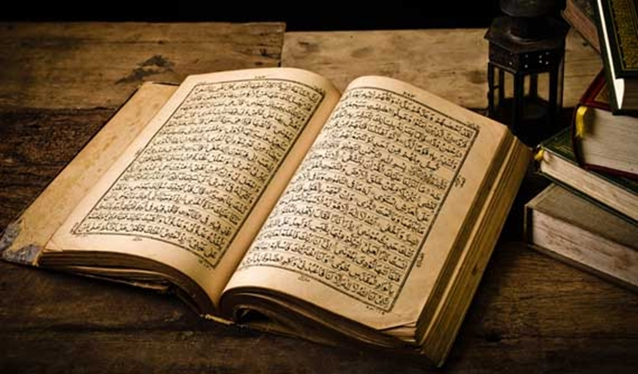

MARKAZ ISLAMI
Artikel Tentang Agama Islam By Affan Asyraffi
Kalimat Yang Terletak Di Tengah Al-Qur'an
Diposting pada 15.00 WIB, 17 November 2020 
Bagi yang sering mengaji Al Quran dengan mushaf Al Quran cetakan Indonesia, biasanya akan menjumpai kalimat yang dicetak agak lain dari kalian lainnya. Biasanya dicetak dengan tinta merah, dan atau ditebalkan tulisannya.
Kalimat itu adalah: “walyatalaththof” artinya “hendaknya bersikap lembut”. Kalimat yang ada di Surat Al Kahfi ayat 19 itu adalah bagian tengah Al Quran. Karena pas di tengah Al Quran, maka kalimat ini umumnya dicetak tebal dan atau berwarna merah.
Kebetulan kah bahwa di tengah Al Quran ada pesan kelembutan atau perintah agar kita bersikap lembut? Tentu tidak. Inilah pesan dari Allah sang pencipta yang menurunkan Al Quran, bacaan mulia, sebagai petunjuk bagi orang yang beriman.
Alm. KH Hasyim Muzadi mengatakan bagian tengah Al Quran ini seolah menegaskan bahwa Islam itu identik dengan kelembutan. Karenanya adalah salah, jika ada orang Islam yang kasar, apalagi mendakwahkan Islam dengan kasar.
Abah Hasyim mengatakan, kekuatan Islam itu ada pada kelembutannya bukan kekerasan. Sebagaimana sering dicontohkan Rasulullah Muhammad SAW.
Kelembutan adalah kekuatan Islam. Kekerasan hanya akan menjauhkan orang dari ajaran Islam.
Jika ada orang yang memusuhi Islam pun, hendaknya dihadapi dengan kelembutan dan kecerdasan, jangan dengan kekerasan. Kalau dihadapi dengan kekerasan hanya akan menjadikan Islam seolah identik dengan kekerasan.
Abah mencontohkan, saat ke Rusia, ada orang yang bertanya: “Apa benar Allahhu Akbar itu artinya merusak?”
Lalu Abah menjawab tidak, itu artinya Allah Maha Besar. Abah bertanya mengapa dia bertanya atau mengira begitu? Ternyata karena orang itu sempat melihat video di mana ada orang yang berteriak “Allahu Akbar!” lalu merusak atau melakukan kekerasan.
Inilah yang membuat citra Islam sering dinilai negatif. Banyak orang yang tidak tahu bahwa Islam mengajarkan kelembutan. Banyak pula umat Islam yang tidak mengetahui dan tidak mengamalkan hal itu, akibatnya sadar atau tidak, ikut menorehkan citra buruk pada agama Islam.
Abah menambahkan ajaran Islam agar berlaku lembut, bukan berarti umat Islam tidak boleh tegas atau keras. Ada saat-saat tertentu di mana sikap keras terpaksa juga diambil. Misalnya saat diperangi dan tidak bisa dengan cara lain. Defensif bukan ofensif.